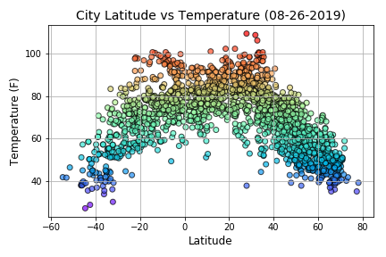

Summary: Lattitude vs. X

The purpose of this project was to utilize an API to generate weather data of randomly selected cities and then conduct some analysis to determine what effect latitude plays on various weather characteristics.
Using randomly generated latitude and longitudinal coordinates, then feeding that into the Python package Citipy which then generated city names most closely associated with the corresponding latitude and longitude.
A list of City names and locations was established, the number of cities included in the dataset varies, for this project we can assume that the dataset will contain around 2,000 unique cities. After that the OpenWeatherMap API is utilized to collect various weather data for each city. For this project the attributes queried were.
- Temperature
- Humidity
- Could Cover
- WindSpeed